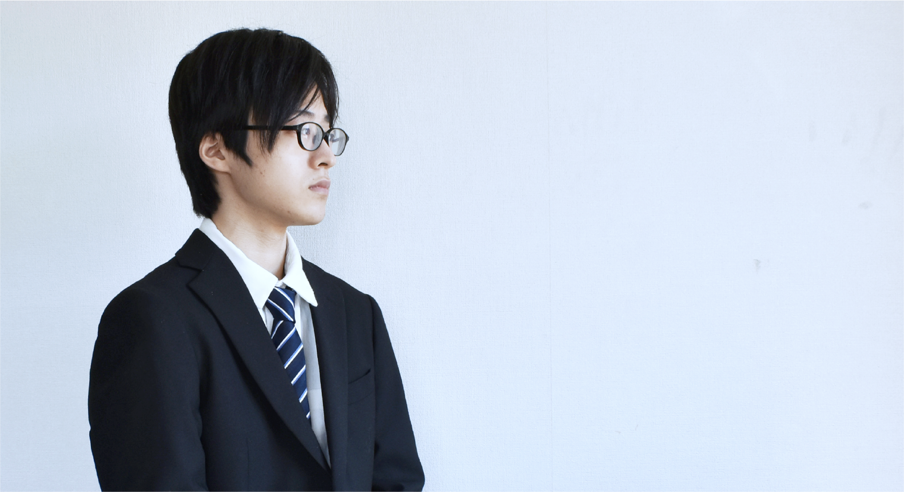

薬澤 航輝
#デザイン #メディアアート #インタラクションデザイン
#映像表現 #認知心理学

1999年9月生まれ
多摩美術大学美術学部統合デザイン学科
理系の一般大学を目指していたが、美術・デザインに憧れがあり 2018年に学術試験のみで多摩美術大学美術学部統合デザイン学科に入学。 2021年に同大学、菅俊一ゼミに所属。
メディア表現を中心に、人の認知や構造を基盤とし、新しい表現の手法を研究・開発を行う。
-課外プロジェクト
宣伝会議×にんべん株式会社PR動画制作プロジェクト20201.3
芸術祭グループ展示 2019.11
卒業制作実行委員 書記
-短期インターン
株式会社 バンダイナムコスタジオ
株式会社 電通 アイディアとテクノロジーの学校2021